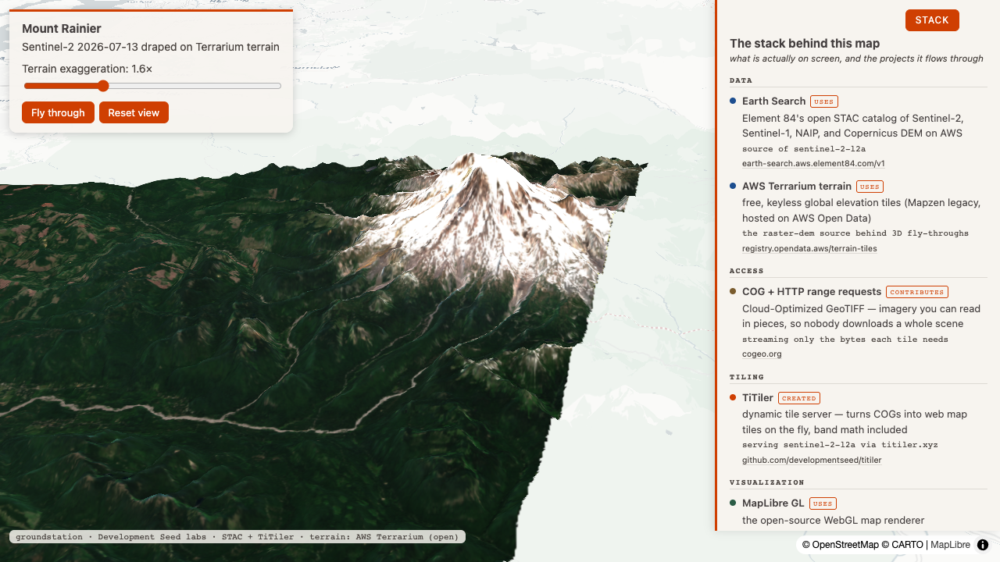
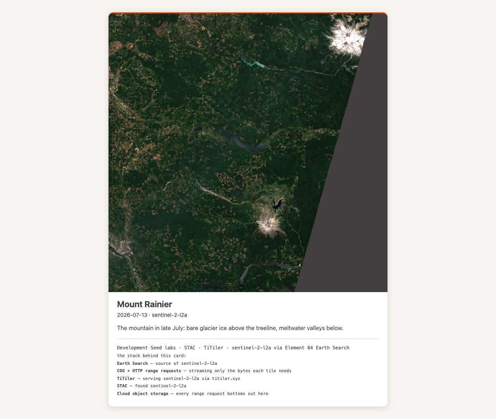
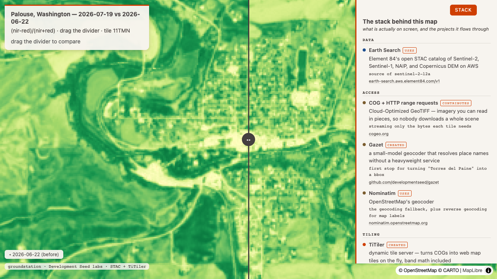

Round 1 — one prompt per surface
1
3d + stack
the roadshow
Input
Mount Rainier in 3D, and show me what's behind the rendering.
Output
A 0.0002%-cloud July 13 scene draped on Terrarium terrain, panel open: Earth Search, AWS Terrarium terrain, COG range requests, TiTiler, MapLibre. The terrain entry only appears here — a 2D map never claims it.
live 3D ↗render_map_3d stack_layer=True, new in G.3: the terrain fact goes live
2
postcard + stack
the share card
Input
Postcard of that Rainier scene, with the stack printed on the back.
Output
The listing prints as static credit lines: Earth Search, COG range requests, TiTiler, STAC, cloud object storage — and no MapLibre, because a still card runs no map engine. No links either, so the card keeps its no-live-URLs guarantee.
live postcard ↗Learning → the postcard previews the full scene, so the mountain sits small in a big tile — framing to the asked-for AOI is the natural next postcard improvement.
render_postcard stack_layer=True: the back-of-postcard form from the design doc
3
honest facts
the harvest
Input
How did the Palouse change over the last month?
Output
compare_dates geocoded the place itself, so its swipe map's panel truthfully claims Gazet and Nominatim alongside the raster pipeline. The answer is wheat harvest: NDVI 0.485 → 0.388, down 19.8% between June 22 and July 19.
live swipe map ↗stack_facts plumbing: panels only claim what the pipeline actually did
Reproduce
git clone https://github.com/dannybauman/groundstation && cd groundstation
uv run evals/unit_checks.py # 63 offline checks, 3 new for G.3
uv run scripts/field_test.py docs/field-test-2026-07-22-no3.cases.json # rebuild this page